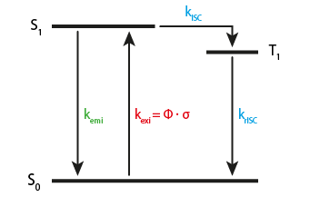

Quickstart (SiMFS-core)¶
Once you have your SiMFS-core installation in place, you can start producing simulation data. This chapter will walk you through the process of simulating a single diffusing fluorophore with cw-excitation.
Note
This section will use the plain commandline interface of the SiMFS-core package. For more complex simulations the python driver pysimfs is recommended. Its usage is introduced in the tutorials section. This section will demo the fundamental building blocks of a SiMFS-Tk simulation pipeline. This is the most basic but also most flexible approach when working with SiMFS-Tk. If you are not comfortable with using the shell directly, you can skip this section and start with the tutorial, where this exact simulation and more complex cases will be addressed using the python interface.
Diffusion and component basics¶
If you want to use SiMFS-Tk from the commandline, make sure you have a basic
understanding of UNIX bash and the following commands: ls, cd, rm,
mkfifo, ps and kill as well as the usage of stdin (<),
stdout (>) redirection and command chaining with && and &.
Prerequisites and setup¶
Create a working directory:
$ mkdir SiMFS-quickstart
$ cd SiMFS-quickstart
Make sure you can invoke SiMFS-Tk components from your working directory.
Working with parameters¶
First we want to generate a diffusion trajectory using simfs_dif. The
diffusion trajectory is a random walk in three dimensions represented as
coordinates (x, y, z, t). Invoke simfs_dif with the list option to
dump a default set of parameters:
$ simfs_dif list
Using defaults only.
{
"collision_output": "__collisions__",
"coordinate_output": "__coordinates__",
"diffusion_coefficient": 1e-10,
"experiment_time": 1.0,
"half_height": 1e-06,
"increment": 1e-07,
"radius": 1e-06,
"seed": 1480616706
}
You should see a whole bunch of text printed to the screen. simfs_dif first
informs us about the fact that no parametrization was provided und only
defaults are used. The list option prevents it from doing anything else but
parse parameters and fill gaps with its default values. The paramters are
encoded as a json object. You can save the defaults by redirecting them to a file:
$ simfs_dif list > dif.json
The dif.json file contains the default diffusion parameters.
half_height and radius specify the size of the box in which the molcule
can diffuse, experiment_time is the length of the diffusion trajectory.
Together with the time increment it determines the number of coordinates
that will be generated. All units are SI base units (m, s, …). 1 second
simulation time with a time increment of 100 ns produces 10 million individual
coordinates. The diffusion_coefficient determines the diffusion behaviour
(i.e. the step size in space) of the molecule. The two output parameters are
filenames that simfs_dif will write its result to. __coordinates__ will
contain the 10 million coordinates after the run. We ignore the
collision_output for now.
We want to change the parameters to fit our needs. Open dif.json with your
favourite editor and change th values for the coordinate output to
coords.dat and the collision output to /dev/null (we don’t need it
now). We also change the diffusion coefficient to 4.35e-10, which is the
literature value for Alexa Fluor 488 in water in \(\frac{m^2}{s}\). Lastly
delete the line containing the seed parameter and the trailing comma above.
Save the file and feed it into simfs_dif again like this:
$ simfs_dif list < dif.json
{
"collision_output": "/dev/null",
"coordinate_output": "coords.dat",
"diffusion_coefficient": 4.35e-10,
"experiment_time": 1.0,
"half_height": 1e-06,
"increment": 1e-07,
"radius": 1e-06,
"seed": 1451956119
}
The parameter dump reflects your changes. Note that if no seed is provided, a new one will be created every time.
Running a component¶
You are ready to start your first simulation run by ommiting the list option. You can use the parameter output as a log file for your run by again redirecting it to a new file.
$ simfs_dif < dif.json > dif.log.json
After a brief moment, the command returns and the directory should contain two new files:
$ ls -l
total 312512
-rw-rw-rw- 1 tizi tizi 320000000 Mar 5 15:06 coords.dat
-rw-rw-rw- 1 tizi tizi 217 Mar 5 15:01 dif.json
-rw-rw-rw- 1 tizi tizi 241 Mar 5 15:06 dif.log.json
Inspecting results¶
The large coords.dat file contains the 10 million coordinates as binary
tuples of (x, y, z, t). To quickly inspect it, you can use the system tool
od that displays binary data as text:
$ od -t f8 -N 128 -w32 coords.dat
0000000 8.521610130932819e-07 -4.0887056784284747e-07 8.16684813686339e-07 0
0000040 8.657852033462311e-07 -4.1840942341649523e-07 8.263125708566305e-07 1e-07
0000100 8.749074375681369e-07 -4.095287983491634e-07 8.275083766747386e-07 2e-07
0000140 8.822015070247384e-07 -4.162389674979344e-07 8.272075611332907e-07 3e-07
0000200
This shows you the first coordinates (-N 128) as 8-byte float values
(-t f8) in 32-byte chunks per row (-w32). The x, y and z values describe
the random walk in the box, while t increments in constants steps of 100 ns.
Evaluating focus functions¶
We now have the position of the molecule as a function of time written to disk.
Next we need to find out the laser intensity and detection efficiency of at
each position. We use simfs_exi and simfs_det for this purpose.
Excitation focus¶
Take a look at its default paramters:
$ simfs_exi list
Using defaults only.
{
"input": "__coordinates__",
"output": "__focus__",
"power": 1e-06,
"shape": {
"waist_x": 2.49e-07,
"waist_y": 2.49e-07,
"waist_z": 6.37e-07
},
"type": "3dGauss",
"wavelength": 4.88e-07
}
The component converts 4d coordinates from its inputs to pairs of time and photon flux intensity at that position. The focus shape function is in this case a 3d Gauss that is parametrized with 3 \(\frac{1}{e}\) waists. The power and wavelength in W and m are needed to determine the photon flux density from this distribution.
Save the parameters to exi.json and change the input file to our coordinate
file. Furthermore, rename the output to exciatation.dat and increase the
power to 10µW. You can again check the file like this:
$ simfs_exi list < fcs.json
{
"input": "coords.dat",
"output": "excitation.dat",
"power": 1e-05,
"shape": {
"waist_x": 2.49e-07,
"waist_y": 2.49e-07,
"waist_z": 6.37e-07
},
"type": "3dGauss",
"wavelength": 4.88e-07
}
You can now run the component in the same way as simfs_dif:
$ simfs_exi < fcs.json > fcs.log.json
After the run, the file excitation.dat contains 10 million pairs of 8-byte
photon-flux, time values:
$ od -t f8 -N 64 -w16 excitation.dat
0000000 2876511477910.12 0
0000020 969522821513.2721 1e-07
0000040 729249356145.5566 2e-07
0000060 404358061321.1981 3e-07
0000100
Detection focus¶
simfs_det produces detection efficiencies between 0 and 1 in the same way
that simfs_exi creates photon flux. For our purposes, we apply
simfs_det to the same trajectory (coords.dat) without modifications.
The parameters in det.json should look like this:
$ simfs_det list < det.json
{
"input": "coords.dat",
"max_efficiency": 1.0,
"output": "efficiency.dat",
"shape": {
"waist_x": 2.49e-07,
"waist_y": 2.49e-07,
"waist_z": 6.37e-07
},
"type": "3dGauss"
}
After running:
$ simfs_det < det.json > det.log.json
You get a file with detection effciencies as a time series:
$ od -t f8 -N 64 -w16 efficiency.dat
0000000 1.1403589768728395e-14 0
0000020 3.843558634429651e-15 1e-07
0000040 2.891022879781843e-15 2e-07
0000060 1.603029741544923e-15 3e-07
0000100
We now have evaluated our two focus functions for excitation and detection for our molecule. Next up is the actual generation of photon events.
Photophysics¶
The photophysics component simfs_ph2 is the most complex part of SiMFS-Tk.
Its core responsibility is to simulate a generalized state diagram that is
tightly related to the Jablonkys diagram of a fluorophore. States like S0,
S1 and T1 are connected via transition rates, that determine the individual
life-times of a given state conversion. These rates may be constant or
dynamically updated from input data. There are multiple ways a transition graph
can interact with the outside world during the simulation.
Three state system¶
Consider a simple 3-state fluorophore system:
We have three states and four transitions (vibrational states and internal conversion are ignored here). The blue rates (\(k_{ISC}\) and \(k_{rISC}\)) are considered constant and can be specified by single rates. The green rate \(k_{emi}\) is the emission rate and also a constante. However, this transition is special, as it produces photons. \(k_{exi}\) depends on the laser excitation. It can be computed as \(k_{exi} = \Phi \cdot \sigma\), where \(\Phi\) is the photon flux density of the laser excitation in \(\frac{1}{m^2}\) and \(\sigma\) is the molecular absorption crosssection that is proprtional to the molar absorption coefficient \(\epsilon\) in \(\frac{l}{mol\cdot cm}\)
\(\Phi\) is the actual quantity that we computed in excitation.dat, so
this file will serve as the input for the excitation edge. With the time step
from the diffusion trajectory (100 ns), a rate will be computed from each input
flux, and a static simulation of the graph with fixed rates is preformed until
the next time step is reached.
Parameter representation¶
Translating this into parameters to
simfs_ph2 looks like this:
{
"initial_state": "S0",
"jablonsky": {
"emi": {
"from": "S1",
"output": "emission.dat",
"rate": 1e+8,
"to": "S0"
},
"exi": {
"from": "S0",
"rate": {
"input": "excitation.dat",
"epsilon": 73000
},
"to": "S1",
},
"isc": {
"from": "S1",
"rate": 1e+6,
"to": "T1"
},
"risc": {
"from": "T1",
"rate": 1e+6,
"to": "S0"
}
}
}
Each object within the jablonsky object represents an edge in the
transition graph. Each has at least a from, to and rate field
specified. isc and risc have a constants rates set to 1 MHz. In addtion
emi is parametrized to write a timetag to the output emission.dat
whenever it is traversed. Note that you can add outputs to any edge you are
interested in. The exi edge has a special dynamic rate parameter: It reads
flux values from the input excitation.dat and calculates its rate according
to the epsilon value.
Note the the names of the edges and nodes can be freely defined by the user.
Nodes are implicitely added if they appear as from or to in at least
one transition. Furthermore, a node without an outgoing transition is a dead
end and terminates the simulation preemptively.
Run the simulation with the given parameters in ph2.json:
$ simfs_ph2 < ph2.json > ph2.log.json
As a result you get your emission file that contains photon arrival times:
$ od -t f8 -N 64 -w8 emission.dat
0000000 0.0009079984765546347
0000010 0.0009152793599941517
0000020 0.0009257110802838159
0000030 0.000943526107273474
0000040 0.0009598299824447027
0000050 0.0009761390643363464
0000060 0.0009989992608058992
0000070 0.0010024525289886105
0000100
You made it! These are simulated photon times that include diffusion dynamics through a Gauss shaped laser focus and actual photon statistics with blinking and antibunching.
Detection and photon handling¶
You may have noticed that we haven’t used efficiency.dat so far. That is
because we only simulated up until the moment of photon emission from the
fluorophore and collected every single photon. In a real experiment, the
detection of a photon depends on the laser focus. In SiMFS-Tk excitation and
laser focus are independent objects that are handled in two subsequent steps.
We have already produced a time series of derection efficincies for our
diffusion trajectory according to our detection focus function. We use
simfs_spl to split the raw photon events into actually detected photons and
lost photons based on the detection efficiency data. The parameters look like this:
{
"accepted_output": "detected.dat",
"efficiency_input": "efficiency.dat",
"photon_input": "emission.dat",
"rejected_output": "/dev/null"
}
We select photons from the raw emission, decide to keep or to drop it according
to the current detection efficiency and write the result to detected.dat.
Rejected photons are discarded to /dev/null.
As a result you get the file detected.dat which is a subset of
emission.dat:
$ wc -c emission.dat detected.dat
598888 SiMFS-quickstart/emission.dat
202832 SiMFS-quickstart/detected.dat
801720 total
You see, that with the current parameters, about two thirds of photons are dropped in the detection step.
Next steps¶
Since the final result is a stream of binary 64-bit floating point time values, it is straight forward to feed it into your analysis procedure of choice. Timetrace binning and correlation analysis provide insight into the diffusion behaviour and its interaction with different focus shapes, as well as the rate fast photophysical dynamics represented by more complex rate graphs.
Most of the components introduced here have more features available. Especially
the capabilities of simfs_ph2 to react to environmental inputs can increase
the complexity ot the photophysics simulation a lot. Combining this with
differnt focus shapes for simfs_exi and simfs_det, multiple excitation
lines and pulse patterns opens a much wider field of simulation tasks. See the
component documentation and the examples in the tutorials section for more
info.